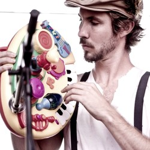
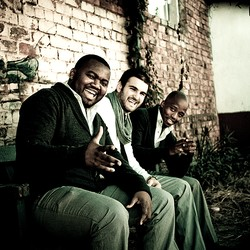

| Band Name |
Genre |
Start Time |
End Time |
Band Name |
Genre |
Start Time |
End Time |
| Jeremey Loops |
Acoustic
|
 |
Jeremy Loops aint no traditional 'band', creating music on the spot with that there
loopdaloop pedal.
Various artists also join him for free jam sessions & the music they create is all
original.
it'll definitely make ya dance like a hick!
|
Matthew Mole |
Acoustic
|
 |
I'm not that good at speaking, so bare with me here.
Music is my second nature.
It takes up a lot of my time, it drives me, it makes me who I am.
|
| Prime Circle |
Alternative
|
 |
Prime Circle is a South African rock band success story.
They’ve gone from a rehearsal room in the small town of Witbank, to one of South Africa’s
most popular bands.
They formed in 2001.
|
| Dan Patlansky |
Blues
Rock
Jazz
|
 |
What Dan Patlansky can do with a six-string Fender Stratocaster at the age of 26,
most critically acclaimed guitarists will never quite achieve in a lifetime.
|
| Mi Casa |
Dance
Club
|
 |
Mi Casa gives a whole new meaning to soulful house. This is what the world has been
yearning for & now that Mi Casa is here its so overwhelming that no words can define
their talent!
|
| The Narrow |
Alternative
Rock
|
 |
Since forming The Narrow, the band very quickly developed their own sound and identity
whilst retaining elements of their roots.
|
| The Parlotones |
Rock
Alternative
|
 |
The Parlotones are known for their electric, polished stage performances delivered
against the backdrop of their deftly crafted and darkly romantic lyrics.
|
| ShortStraw |
Folk
Acoustic
|
 |
Shortstraw are a joburg based band making waves on the national indie music scene
in a big way.
|
| Gangs of Ballet |
Dance
Club
|
 |
Their music, which combines their fresh energy with their musically intriguing melodies
and arrangements, has a hauntingly anthemic sound.
|